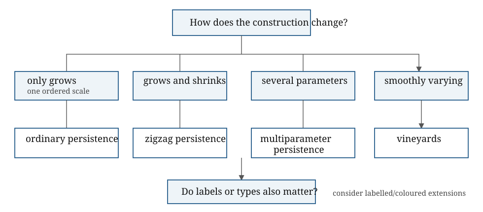

What object are we constructing, what information does it retain, and what scientific claim could it support?
Week 8 should be organised by problem type rather than by a list of advanced methods. The aim is to teach method selection: what breaks in ordinary persistence, and which tool responds to that break?
Core: diagnose the failure and choose the least elaborate adequate framework.
Research extension: Turner example, transport maps, vineyard modules and indecomposability.
The extension is not required for every participant.

If complexes only grow, ordinary one-parameter persistence is the natural tool. This is the clean barcode setting. The inclusion maps all point in the same direction: \[K_0\subseteq K_1\subseteq\cdots\subseteq K_n.\]
If complexes grow and shrink, zigzag persistence is the natural extension. Instead of all maps pointing in one direction, the diagram can zigzag: \[K_0\to K_1 \leftarrow K_2 \to K_3 \leftarrow \cdots.\] Zigzag persistence is designed for insertions and deletions of simplices. It is mathematically appropriate for non-monotone sequences, but it can be computationally and interpretively heavy.
Standard persistence tracks features that survive as a space grows. Zigzag persistence tracks features that survive as a space changes.
\[K_0\longrightarrow K_1\longleftarrow K_2\]
means \(K_0\subseteq K_1\) and \(K_2\subseteq K_1\).
Example: path \(a-b-c\) \(\to\) triangular outline \(\leftarrow\) path \(a-b-c\). The \(H_1\) class exists only at the middle index, producing one transient zigzag interval.
Week 7 built the scale-by-codensity example. If two parameters are jointly ordered, multiparameter persistence is the relevant framework. The warning is essential: the clean barcode decomposition of one-parameter persistence does not carry over in the same way. Multiparameter persistence may be the right mathematical object even when a practical analysis later uses lower-dimensional summaries.
† Qualification. The presence of two named variables does not by itself decide the framework. The question is whether they form one partial order to be analysed jointly, or whether one parameter indexes a controlled family of ordinary persistence modules with additional transport data.
Time is a valid second parameter for cumulative data \(X_t\subseteq X_{t'}\). Independent snapshots do not become a bifiltration merely because they have timestamps.
Vineyards apply when there is a fixed simplicial complex \(K\) and a time-dependent filtration function \[f_t:K\to\mathbb{R}.\] There are now two distinct parameters: \[\underbrace{t}_{\text{external or physical time}}, \qquad \underbrace{a}_{\text{filtration height or scale}}.\] At each fixed time \(t\), the sublevel filtration of \(f_t\) produces an ordinary persistence module \[V_t(a)=H_p(K_{t,a};\mathbb F)\] and a persistence diagram \(D_t\). A vineyard tracks how the birth–death points of \(D_t\) move as \(t\) varies. Each tracked curve is a vine.
The useful teaching picture is a landscape whose height function changes over time. Ordinary persistence studies flooding one fixed landscape. A vineyard studies what happens when the landscape itself slowly morphs.
A vineyard module retains more than the visible trajectories. It consists of the persistence module \(V_t\) at each external time together with coherent interleaving maps between the modules at different times. Schematically, the horizontal direction is ordinary persistence through filtration height, while the vertical direction transports information through physical time: \[\begin{array}{ccccc} V_s(a)&\longrightarrow&V_s(b)&\longrightarrow&V_s(c)\\ \downarrow&&\downarrow&&\downarrow\\ V_t(a+\varepsilon)&\longrightarrow& V_t(b+\varepsilon)&\longrightarrow& V_t(c+\varepsilon). \end{array}\]
▶ Likely sticking point. For a single well-behaved one-parameter module, its barcode classifies the module up to isomorphism. But the source and target barcodes do not classify a particular map between two modules. Dynamic questions may depend on those maps.
Use Figure 1 of Turner, Representing Vineyard Modules, as the concrete example.
The domain is a disc divided into four pieces:
Before the first critical event, a natural basis is \[[B],\qquad[D+B],\] whereas after the second critical event the forced basis is \[[B],\qquad[D].\] Over \(\mathbb F_2\), \[[D]=[D+B]+[B].\] Thus the change of basis mixes the two visible vines. After coherent simplification, an off-diagonal term remains in a transport matrix of the form \[\begin{pmatrix} 1&1\\ 0&1 \end{pmatrix}.\]
The off-diagonal \(1\) means that transporting the second generator through time necessarily picks up part of the first. There is no globally coherent choice of bases that turns the family into two independent \(1\times 1\) problems.
Smooth motion of points does not necessarily imply smooth behaviour of the filtration order. In a moving point cloud, many distances can change relative order at once. Edges, triangles and higher-dimensional simplices can undergo large global reorderings. This makes it hard to identify the same topological feature across time. The persistence diagram may be stable in bottleneck distance, while feature identity is still unstable.
This is the distinction to emphasise: \[\text{diagram stability} \neq \text{reliable feature tracking}.\]
If points, regions or agents carry labels, colours or types, ordinary persistence may ignore the structure of interest. Chromatic or relative-style methods ask how different classes spatially mingle, separate or interact. Relative homology, image persistence, kernel persistence and cokernel persistence can be introduced conceptually here as tools for asking what part of a feature belongs to, is contributed by, or is shared across different subobjects.
See the applied glossary for the translation layer.
TDA MasterClass